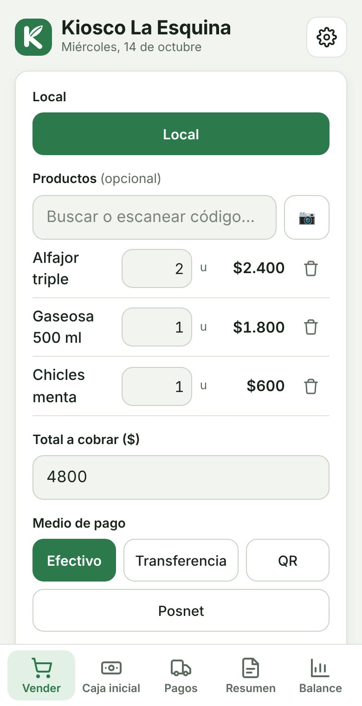

La caja de tu kiosco, en el celular.
Escaneás con la cámara, Kovo calcula el vuelto y al final del turno sabés cuánta plata tiene que haber en la caja.
Sin tarjeta para la prueba · Sin contrato · Cancelás cuando quieras

Lo que Kovo resuelve en un kiosco
Una venta atrás de otra
Apuntás la cámara al código de barras y el producto se carga solo. Si ya tenés un lector de mano, también funciona. Kovo suma el total y te dice el vuelto.
Empleados por turno
Cada empleado entra con su cuenta de cajero: anota ventas, pero no ve el balance ni la ganancia. Con la caja inicial y los retiros sabés cuánto efectivo tiene que haber al cambiar de turno.
Precios que suben todo el tiempo
Subís los precios por porcentaje en un toque: todos, o solo los que buscaste, como una marca de golosinas. Kovo los redondea a $10 o a $100.
Mercadería que se termina sin avisar
El stock se descuenta con cada venta y Kovo te avisa qué productos se están por terminar, según lo que vendés por día.
Y además
Escáner con la cámara
Apuntás al código de barras y el producto se carga solo.
Cierre de caja
Lo vendido por medio de pago, el efectivo que tiene que haber y lo más vendido del día.
Balance del mes
Ingresos, egresos, ganancia y lo más vendido. Ideal para el contador.
Alertas de stock
Te avisa qué se está por terminar según lo que vendés.
Cuentas para cajeros
Tus empleados venden, pero no ven el balance.
Tus datos, guardados
Todo queda en la nube. Si se rompe el celular, entrás desde otro.
Un solo plan, con todo incluido
Sin costos de instalación ni equipos especiales. Pagás con Mercado Pago y cancelás cuando quieras desde la app.
Después, $18.000 por mes.
- 7 días de prueba gratis
- Locales y cajeros sin límite
- Todas las funciones
- Ayuda por WhatsApp
Preguntas frecuentes
¿Tengo que comprar un lector de códigos?
No. Kovo usa la cámara del celular. Si ya tenés un lector USB o Bluetooth, lo podés usar igual.
¿Puedo cargar mis productos desde una planilla?
Sí. Subís un Excel o CSV con el nombre y el precio (y, si querés, código, costo y stock) y Kovo carga todo de una vez.
¿Cómo controlo lo que vende cada empleado?
Cada uno entra con su cuenta de cajero. En el resumen del día ves cada venta con su hora y su local, y el cierre de caja con lo vendido y el efectivo.
¿Tengo que instalar algo?
No. Kovo funciona desde el navegador del celular, la tablet o la compu. Si querés, lo agregás a la pantalla de inicio y se abre como una app.
¿Cuánto cuesta?
$18.000 por mes, con todo incluido y sin límite de locales ni cajeros. Los primeros 10 negocios pagan $15.000 el primer mes. Tenés 7 días de prueba gratis.
¿Hace factura electrónica de ARCA?
Todavía no. Kovo anota las ventas e imprime tickets no fiscales.
Probá Kovo en tu kiosco
7 días gratis. Sin tarjeta, sin contrato.
Kovo también para: AlmacénDietéticaVerduleríaCarnicería